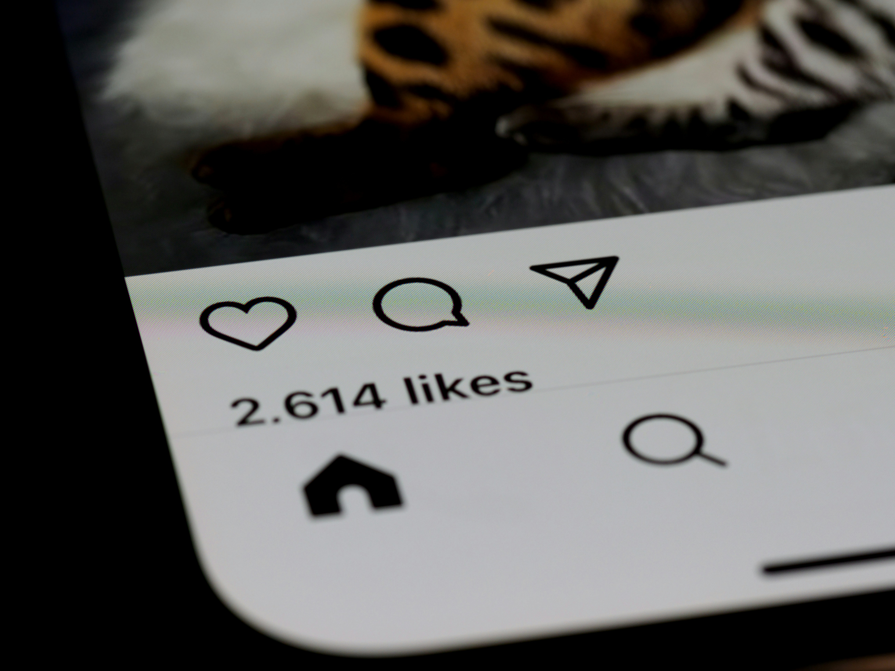

Mídia e Consciência Digital
A saúde mental é essencial para o bem-estar e influencia diretamente como pensamos, sentimos e nos relacionamos. Cuidar da mente é tão importante quanto cuidar do corpo, e pedir ajuda quando necessário é totalmente normal e necessário. As redes sociais, apesar de aproximarem pessoas, também podem afetar a autoestima por meio da busca por curtidas e comparações constantes. Isso pode gerar insegurança e ansiedade, além de prejudicar a forma como nos comunicamos com quem está ao nosso redor. Por isso, é importante usar as redes com equilíbrio e lembrar que curtidas não definem o nosso valor nem a nossa felicidade.
Reportagem sobre felicidade e redes sociais.